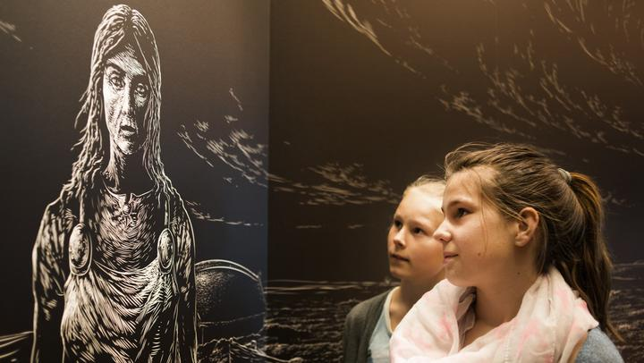
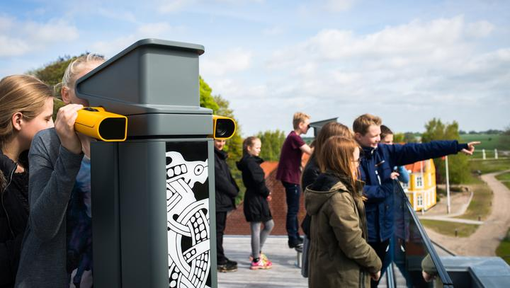
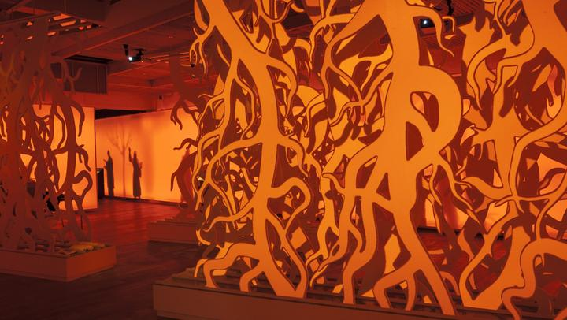
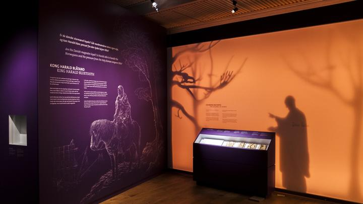

☰

Oplevelsescenter i smukke rammer
Oplevelsescenter Kongernes Jelling ligger midt i det historiske monumentområde omkring Jelling Kirke. På oplevelsescentret fortæller vi om vikingekongerne Gorm og Harald, deres runesten, den store skibssætning og den gigantiske palisade, der blev rejst for mere end 1000 år siden. Og husk: Der er gratis adgang.


En sanseoplevelse med digitale tricks
Unik og supermoderne digital sanseoplevelse, der handler om vikingernes liv og levned. En rejse fra fortællinger i flammernes skær, over livet som viking og kriger, rejsen til Valhal og overgangen til kristendommen.

